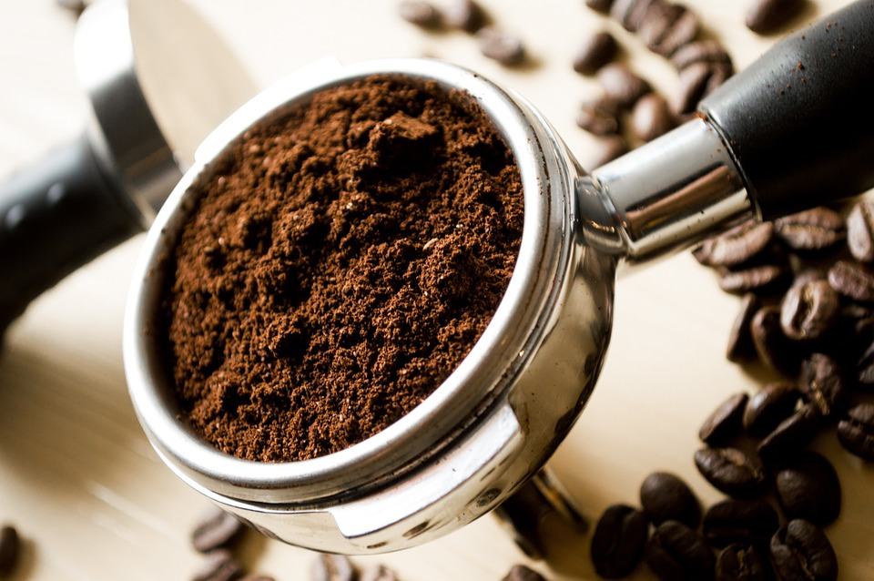
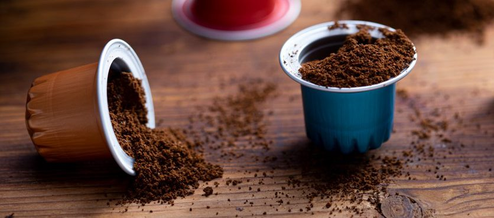

Cafés Especiais
-

Café em Grãos Espresso 250g
Blend intenso, com notas de chocolate amargo e corpo encorpado. Ideal para máquinas de espresso.
Ver detalhes -

Café Moído para Filtro 250g
Torra média, com notas de caramelo e frutas secas. Perfeito para coador de pano ou filtro de papel.
Ver detalhes -

Cápsulas de Café (10 un.)
Cápsulas compatíveis com máquinas Nespresso®, sabor equilibrado e crema persistente.
Ver detalhes -

Kit Presente Cafés do Brasil
Caixa especial com 3 pacotes de 250g de diferentes regiões produtoras brasileiras.
Ver detalhes